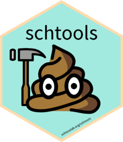

schtools 
Schloss Lab Tools for Reproducible Microbiome Research 💩
A collection of useful functions and example code created and used by the Schloss Lab for reproducible microbiome research. Perform common tasks like read output files from mothur, tidy up your microbiome data, and format rmarkdown documents for publication. See the website for more information, documentation, and examples.
Installation
You can install the latest release from CRAN:
install.packages("schtools")or the development version from GitHub with:
# install.packages("devtools")
devtools::install_github("SchlossLab/schtools")Usage
Check out the introductory vignette for a quick start tutorial or take a look at the reference documentation for a comprehensive list of functions.
Help & Contributing
If you come across a bug, open an issue and include a minimal reproducible example.
If you’d like to contribute, see our guidelines here.
Code of Conduct
Please note that the schtools project is released with a Contributor Code of Conduct. By contributing to this project, you agree to abide by its terms.
License
The schtools package is licensed under the MIT license. The logo is licensed under the CC BY-SA license.
Citation
To cite package 'schtools' in publications use:
Sovacool K, Lesniak N, Schloss P (2022). _schtools: Schloss Lab Tools
for Reproducible Microbiome Research_.
http://www.schlosslab.org/schtools/,
https://github.com/SchlossLab/schtools.
A BibTeX entry for LaTeX users is
@Manual{,
title = {schtools: Schloss Lab Tools for Reproducible Microbiome Research},
author = {Kelly Sovacool and Nick Lesniak and Patrick Schloss},
year = {2022},
note = {http://www.schlosslab.org/schtools/,
https://github.com/SchlossLab/schtools},
}